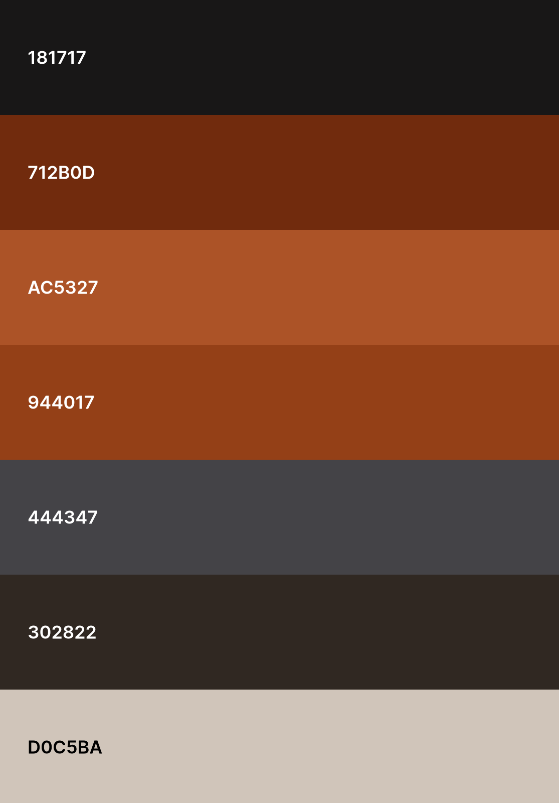
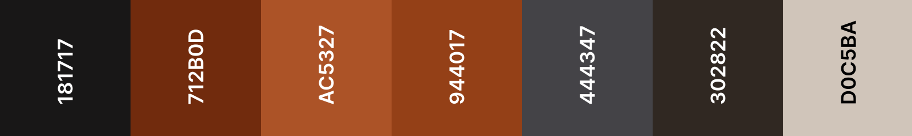

Brödtext:
Brödtext menas med tillexempel texten inom en panel.
Denna sidan har syftet att guida dig i den grafiska profilen inom Wigellkoncernen.
Målet är en enkel, snabb lathund till implementeringen i nya och befintliga element.
Varje område är indelat i tre boxar med olika syften.
Inom den markerade ramen så finns det grafiska elementet. Dock ligger paneler och meddelanden utanför exempel-ram för ökad tydlighet.
Inom den tunnare ramen finns beskrivande text av grafiska element och stilval.
Inom den sträckade ramen finns kodimplementationen iform av CSS och HTML redo att kopieras.
Knapp med CSS-symbol kopierar CSS och knapp med HTML-symbol kopierar html.

I bakgrunder i header, footer och mains bakgrund används en nästan helt svart nyans (#181717.)
I navigationsbakgrunden används en roströd nyans (#712B0D).
Där dem huvudsakliga elementen förändras och renderas används en bakgrund används en ljusare
beige nyanns (#DOC5BA).
På denna används paneler med en grå bakgrund (##444347) inramade av en orange kant.
:root {
/*Bakgrunder*/
--color-bg: #181717;
--color-surface-raised: #444347;
--color-bg-l: #D0C5BA;
}
Brödtext p
All text vid dem mörka bakgrunderna är av samma var vita färg.(#DOC5BA) och uppfyller på
kontrastkraven för WCAGs AA-nivå.
Vid ljus bakgrund och för WGCA's AAA-nivå används en mörk, nästan helt svart nyans
(#181717).
:root{
--color-text: #D0C5BA;
--color-text-primary-l: #181717;
}
Färg på ramar, detaljer i scroollbar eller liknande används mörkgrå alternativt orange
:root{
--color-dec-accent: #AC5327;
--color-border: #444347;
}
font-family:"BBH Bartle", sans-serif; font-family: "Racing Sans One", sans-serif; font-family: "Noto Serif", serif; Generell brödtext
H1 används till huvudrubriker.
H2 används för underrubrik till H1, tex beskriva ett
motto.
H3 används till vanliga rubriker i
dokument/panel osv.
H4 är underrubrik för att markera innehållet i en paragraf.
Storleken på rubrikerna är större än standard och ligger på 1.9 rem för H1 och
sjuker
med
0.2 för varje steg till H3 på 1.5rem:
Brödtext menas med tillexempel texten inom en panel.
h1 {
font-size: clamp(1rem, 6.7vw, 5rem);
}
h2 {
font-size: clamp(1.52rem, 2.8vw, 4rem);
}
h3 {
font-size: clamp(1.22rem, 2.24vw, 3.2rem);
text-transform: uppercase;
}
h4 {
font-size: 1.2rem;
}
p {
font-size: 1rem;
} 
Tabeller rekommenderas endast där behova av många kolumner annars rekomenderar vi kort med listor
för att visa upp data.
Rubrikerna för tabellen är i en tydlig font, samma som i resterande data.
Ljus bakgrund i rubrikerna för tydlighet. Varannan kolumn med bakgrunderna (#181717) och (##302822)
med samma text-färg på kolumnnivå för enklare läsning.
Med ram i en dekorativ orange (#AC5327);
.wide-table {
background-color: var(--color-bg);
color: var(--color-text);
overflow: auto;
}
th {
font-family: var(--info-text);
background-color: var(--color-bg-l);
border: 2.5px solid var(--color-dec-accent);
font-size: clamp(20px, 1.1rem, 30px);
color: var(--color-text-primary-l);
padding: 1em;
cursor: pointer;
}
.wide-table td {
border: 0.5px solid var(--color-dec-accent);
border-collapse: collapse;
padding-inline: 0.5rem;
padding: 0.8em;
}
.wide-table td:nth-child(odd) {
background-color: var(--color-surface);
color: var(--color-text);
}
Vid formulär används input-fält utan ramar som markeras vid tab som fokus-område.
Formulär läggs i standard panel med grå bakgrund, beigetext och orange ram.
/* Formulärets yttreruta */
form{
width: clamp(27rem, 55vw);
height: auto;
padding: 2rem;
font-size: 1rem;
}
/* Fält för användarens input */
.input-fields {
width: 90%;
border: none;
padding: 0.3em;
}
/* Marginaler mellan formulärets fält*/
.form-margin{
margin:0.2em;
}
Neutral - Avskalad tunn kant som avgränsar området Mörk text mot ljusbakgrund
Positiv - Grå bakgrund, beige text, orange ram.
Negativ - Grå bakgrund, beige text, mörkgrå ram - Gärna tillägg med en ikon.


/* Neutral */
.panel-important {
text-align: left;
border: 0.02rem solid var(--color-border);
border-radius: 0rem;
background-color: var(--color-text);
color: var(--color-bg);
font-size: 1.2rem;
}
/* Positiv */
.panel {
border: 0.13rem solid var(--color-dec-accent);
margin: 0.5em;
padding: 1em;
display: flex;
flex-direction: column;
align-items: center;
background-color: var(--color-surface-raised);
color: var(--color-text);
}
.panel:hover {
border: 0.2rem solid var(--color-dec-accent);
}
/* Negativ */
.panel-neg {
border: 0.13rem solid var(--color-bg);
margin: 0.5em;
padding: 1em;
display: flex;
flex-direction: column;
align-items: center;
background-color: var(--color-surface-raised);
color: var(--color-text);
}
Fyra olika knappar med resposivitet med hjälp av förändring av ram vid
hoovring. Förändringen syns vid tryck på touchskärm. Använd gärna med ikon som stöd för
tydlighet. Glöm då ej alt-text på ikon eller aria-hidden="true".
Positiv-knapp har en bred ram i orange.
Standard-knappen och neutral-funktionsknapp är likt den positiva knappen men med smalare
ram.
Negativ-knapp utökar sin grundstorlek till samma som om den hade haft en ram och är
genomgående mörktext mot vit bakgrund.
.std-btn {
width: clamp(48px, 80%, 175px);
height: clamp(48px, 25%, 55px);
border: 0.15rem solid var(--color-dec-accent);
font-size: 1.2rem;
font-family: var(--small-headlines);
text-transform: uppercase;
text-align: center;
border-radius: 1rem;
padding: 0.8rem;
margin: 0.5rem;
cursor: pointer;
}
/*Används tillsammans med std.btn*/
.pos-btn {
border: 0.25rem solid var(--color-dec-accent);
}
/*Används tillsammans med std.btn*/
.neg-btn {
padding: 1rem;
border: none;
} Vid lyckad sparning eller annan icke negativ händelse används en enkel meddelanderuta
som bekräftelse för att visa händelsen. Meddelanderutan visas antingen genom förändring i
ett fast element eller som dialogruta. Ex. som dialogruta.
Bakgrunden är neutral men markerar sitt positiva budskap med text och symbol.
Se avsnittet om paneler för färgsättning och symboler/ikoner för exempel på symbol.
Vid misslyckad sparning eller annat negativt event används en enkel meddelanderuta som
varning att visa att något inte gick enligt plan. Visas genom förändring antingen i ett
fast element eller popup. Exempel som popup.
Bakgrunden är neutral men markerar sitt varnande budskap med text,symbol.
Se avsnittet om paneler för färgsättning och symboler/ikoner för exempel på symbol.
Laddningsindikatorn är två symboler av en diagonal linje som genom paralell snurr visar på en aktivprocess. En ligger i samma färg som knapparnas primära färg och den andra symbolen har samma färg som används på knapparna vid hoovring/aktivering.
/*Animeringen av snurr*/
@keyframes spin{
from {transform: rotate(0deg);}
to {transform: rotate(360deg);}
}
/* Symbol 1 och 2*/
.loading-icon{
animation: spin 5s linear infinite;
display: inline-block;
color: var(--color-primary);
}
#icon-accent {
color: var(--color-primary-hover);
}
Se exempel till vänster på meny eller som hamburgarmeny vid mindre skärm.
/*Skapar med hamburgarikon och Javascript en dynamsik meny.*/
.mobile-menu {
display: none;
grid-area: nav;
font-family: var(--small-headlines);
background-color: var(--color-primary);
display: flex;
flex-direction: column;
width: 100%;
}
/*Använder grid för att sätta navigationen till vänster*/
.desktop-menu {
grid-area: sidebar;
font-family: var(--small-headlines);
background-color: var(--color-primary);
display: flex;
flex-direction: column;
}
/* Klass för överrubrik */
.menu-link {
display: block;
text-decoration: none;
text-transform: uppercase;
color: var(--color-text);
background-color: var(--color-primary);
padding: 0.7em;
}
.menu-link:hover {
background-color: var(--color-primary-hover);
transition: background 0.2s, color 0.2s;
}
/* Klass för underrubrik */
.under-link {
font-size: 0.8rem;
padding-left: 1.5em;
}
.mobile-menu a:focus {
background-color: var(--color-primary-hover);
}
FontAwesomes ikoner används för att förtydliga viss information. Kan animeras valfritt.
<i class="fa-regular fa-trash-can"></i>
<i class="fa-solid fa-wrench"></i>
<i class="fa-solid fa-arrow-right-from-bracket"></i>
<i class="fa-solid fa-car-burst icon-car"></i>
<i class="fa-solid fa-truck-fast"></i>
<i class="fa-solid fa-user-check"></i>
S
<i class="fa-solid fa-user-plus"></i>
<i class="fa-solid fa-user-minus"></i>
<i class="fa-solid fa-arrow-down-wide-short"></i>
<i class="fa-solid fa-arrow-down-short-wide"></i>
<i class="fa-solid fa-filter-circle-xmark"></i>